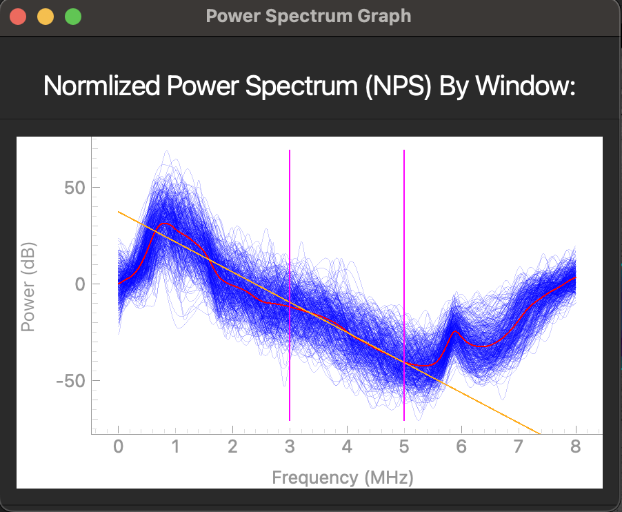

2D UTC GUI Example
Overview
This tutorial is a sample walkthrough of UTC parametrization of scan converted IQ data from a Canon system. For reference, the sample data used in this example can be found here. In this context, UTC refers to the collection of quantitative ultrasound parameters QuantUS computes from the inputted image and phantom data. These parameters are used to characterize the tissue in the image and are displayed in the GUI.
Image Selection
After opening the QuantUS GUI, we can begin by selecting 2D Ultrasound Tissue Characterization (UTC) from the main menu. From here, we can select the Canon IQ button to choose the appropriate parser for this set of analysis. Once we input the image and phantom data file path, we click Generate Image to parse the data.
After the ultrasound parser loads, the image will be displayed in the main window, as shown below.
{kind=link}
On this screen, the purple lines on top of the B-Mode image representing the underlying RF data are unique to an experiment we are currently conducting using the Canon parser. For all other data formats, no such delineation will be present.
Region of Interest Selection
Following the analysis progression on the left side of the GUI, we now move to Region of Interest (ROI) selection. The ROI determines which segmentation of the inputted image we will break into windows and run UTC parameterization on.
On the GUI, the New ROI button enables us to draw a free-handed spline to define the ROI. Alternatively, the Draw Rectangle button allows us to draw a rectangle by dragging our cursor to define the ROI, and the Load ROI loads a pre-drawn ROI that has been saved externally.
{kind=link}
Once the ROI has been defined (see above), we can click the Save ROI button to save the ROI for later use.
To advance to analysis parameter selection, click Accept ROI.
Analysis Parameters for UTC Parameterization
On this screen, we start with a default set of analysis parameters for UTC parameterization. If need be, these can be customized to fit the specific needs of the experiment, and vary aspects such as window size and analysis frequency bandwidth. Specifics about the definitions of each of these parameters are located in the PyQuantUS API section of this documentation as well as the 2D UTC CLI Example. The interface for customizing these parameters is below.
{kind=link}
For the purposes of this example, we will proceed with the default parameters by pressing Continue.
UTC Parameterization
Finally, QuantUS performs UTC parameterization under the hood, and displays the results on the next page. As shown below, the averages of each parameter across all windows are displayed at the top of the screen. Parametric maps for the midband fit (MBF), spectral slope (SS), and spectral intercept (SI) can be activated and deactivated using their corresponding buttons above the B-Mode image.
{kind=link}
For more detailed information on the UTC parameterization process, we can also use the Display NPS button to show the normalized power spectrum (NPS) of each of the windows which contributed to our MBF, SS, and SI results.
{kind=link}
In the above plot, the each dark blue line corresponds to an NPS for an individual window while the red line corresponds to the average NPS across all windows. The orange line is the line of best fit of the average NPS for the given analysis frequency bandwidth as specified in our analysis parameters. Note that the slope, intercept, and median correspond to the SS, SI, and MBF respectively.
Finally, we can save the analysis parameters we used for this analysis as a single configuration in an external file using the Save Analysis Config button. This will allow us to load these parameters in the future for similar analyses.
From here, it is possible to save the numerical values at the top of the GUI into a CSV file using the Save Results button. However, for large sets of analysis, it is recommended for efficiency purposes to only use the GUI for drawing and saving ROIs before using the CLI for batch processing.